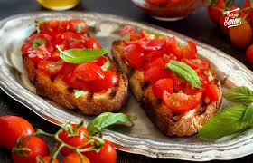
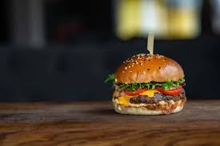
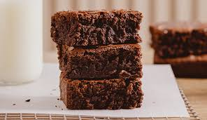

Bienvenidos
En este sitio vas a encontrar recetas fáciles y rápidas para preparar en casa.
Entradas

Bruschettas
Ingredientes
- Pan tostado
- Tomate
- Ajo
- Aceite de oliva
Preparación
- Cortar los tomates
- Mezclar con ajo y aceite
- Colocar sobre el pan tostado
Platos Principales

Hamburguesa Casera
Ingredientes
- Pan de hamburguesa
- Carne picada
- Queso
- Lechuga y tomate
Preparación
- Formar las hamburguesas
- Cocinar la carne
- Armar con pan y vegetales
Postres

Brownies
Ingredientes
- Chocolate
- Manteca
- Huevos
- Harina
Preparación
- Mezclar los ingredientes
- Colocar en una fuente
- Hornear durante 30 minutos
- Dejar enfriar